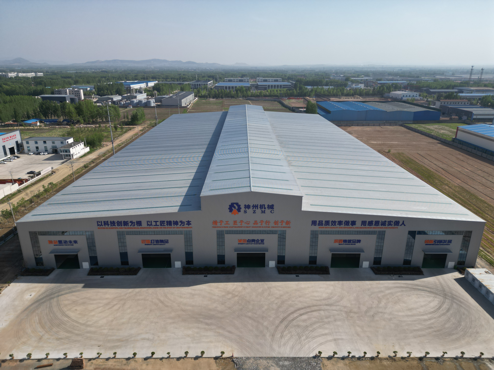

О компании
ООО «Шаньдун Шэньчжоу Машинери», основанное в 1989 году, является современным профессиональным производителем и поставщиком кранового оборудования. Компания объединяет в себе научные исследования, проектирование, изготовление, монтаж и сервисное обслуживание, предоставляя клиентам индивидуальные решения по крановому оборудованию благодаря постоянному стремлению к совершенству качества продукции. Мы также предлагаем профессиональные схемы управления, снимая с клиентов все последующие заботы. Ассортимент продукции компании включает: легкие энергосберегающие краны, однобалочные и двухбалочные мостовые краны, козловые краны, судостроительные краны, электрические тали, а также краны изолированные, электромагнитные, с частотным регулированием, с дистанционным управлением, поворотные (консольные) краны, взрывозащищенное, металлургическое, чистовое (беспыльное) крановое оборудование и различные виды специальных кранов. Компания имеет сертификаты EAC, CE, ATEX, WIKI, а также лицензию класса «А» на производство специального кранового оборудования, выданную Государственным управлением по регулированию рынка КНР. Предприятие сертифицировано по системе менеджмента качества ISO 9001 и обладает собственной интеллектуальной и промышленной собственностью. Мы неизменно придерживаемся принципа «Качество превыше всего, честность — основа», идем в ногу со временем, внедряем инновации. Концепция стабильной работы, безупречного качества и приоритета клиента позволяет нам обеспечивать долгосрочную надежную и безопасную продукцию, облегчать труд наших заказчиков и их долгосрочную ценность.


Каталог поставляемых систем
Грузоподъемные компоненты
Электрические тали-тележки, лебедочные тележки, ручные и электрические козловые порталы для локальных рабочих зон.
Мостовые краны (Кран-балки)
Конструкции общего назначения и двухбалочные краны повышенной надежности для непрерывных циклов эксплуатации.
Козловые и полукозловые краны
Краны с электрическими талями, двухбалочные козловые краны для открытых складских площадок и контейнерных терминалов.
Краны специального назначения
Металлургические краны для работы в условиях экстремальных температур, а также мощные портовые и портальные крановые системы.